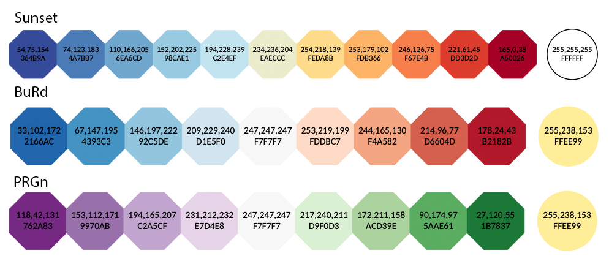
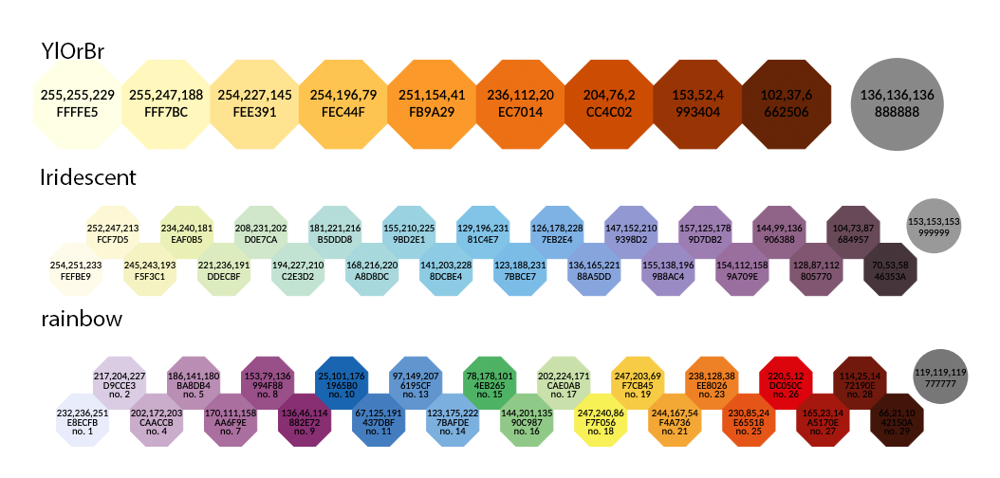
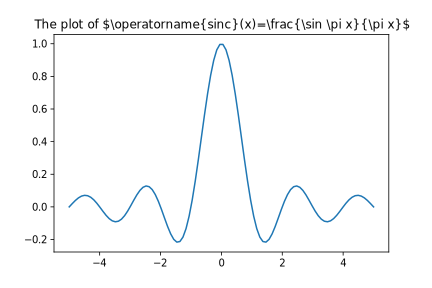
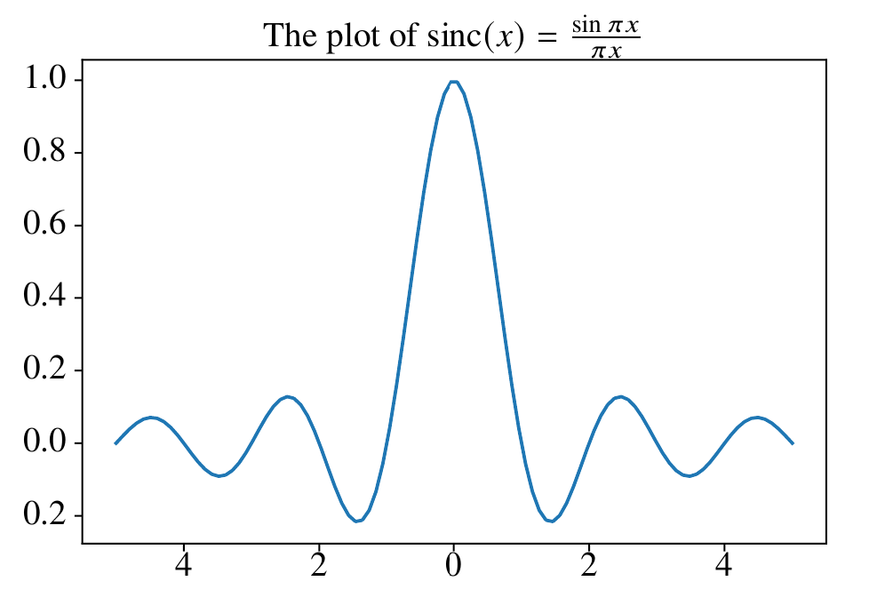
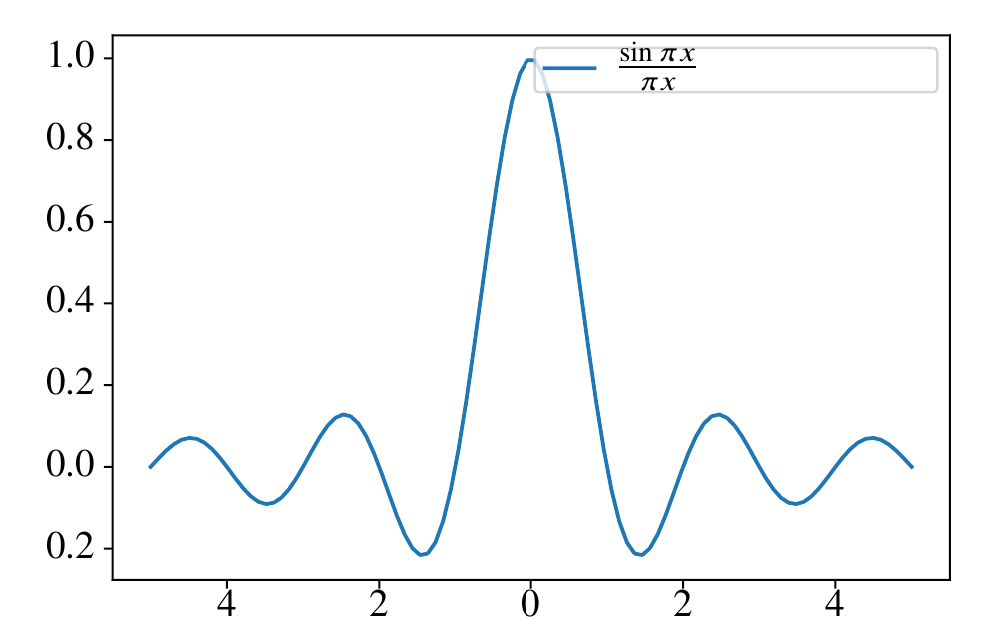
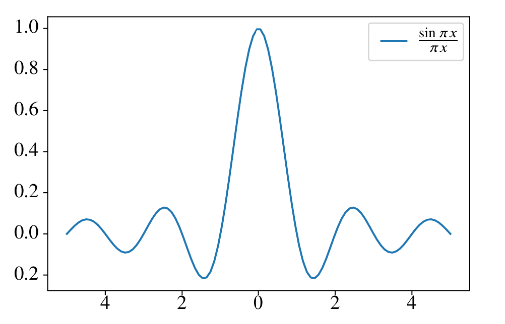
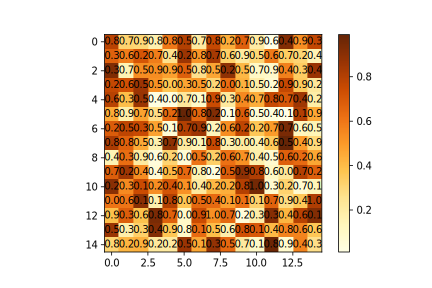
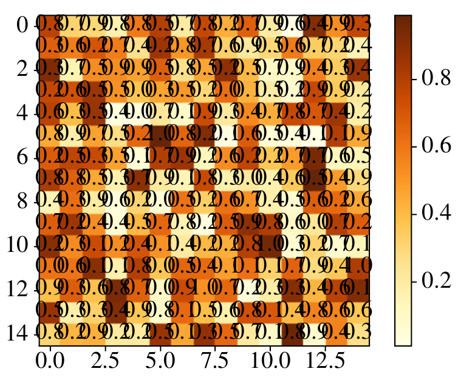
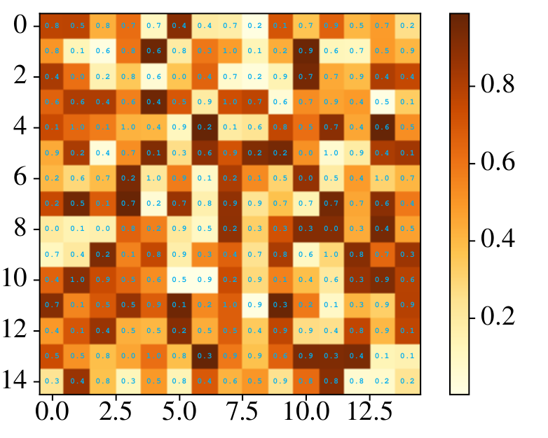

A Better Guide On Producing High-Quality Figures in LaTeX Using matplotlib
16 May 2022In a previous post, I briefly introduced using matplotlib to generate vector graphics for scientific papers.
I think some of the steps in that post is unclear.
In this newer version, I am producing a better guide with more concrete instructions and some additional updates.
Prerequisites
- Load
matplotliband set the parametersimport matplotlib.pyplot as plt plt.rcParams['svg.fonttype'] = 'none' from IPython.display import set_matplotlib_formats set_matplotlib_formats('svg') # # in newer versions of IPython, use # import matplotlib_inline.backend_inline # matplotlib_inline.backend_inline.set_matplotlib_formats('svg')In Jupyter Lab, the figure can be viewed in the browser and saved as SVG using the Shift+Right Click approach descried in the previous post. In other environments, the figure can be saved as SVG using
plt.savefig()with the.svgextension. - Download the color-blind safe color template from Paul Tol
- The Python code
tol_colors.py[Paul Tol’s link] [backup] - The documentation of Python code [Paul Tol’s link] [backup]
After downloading, import the Python module:
from tol_colors import tol_cmap, tol_cset - The Python code
Preamble of LaTeX Examples
\documentclass{article}
\usepackage[T1]{fontenc}
\usepackage{newtxtext,newtxmath}
\usepackage{xcolor}
\usepackage{svg}
\renewcommand{\ttdefault}{qcr}
Plotting Using Color-Blind Safe Color Templates
According to David Nichols, about 1 in 20 people suffers from color blindness. People with such conditions see reduced color spaces, which may create issues when they are reading scientific figures. Therefore, it is encouraged to use color-blind safe color templates in papers (e.g., the one provided by Paul Tol).
tol_colors provides the following qualitative color maps:

tol_colors provides the following diverging color maps (circled colors are for bad data):

tol_colors provides the following sequential color maps (circled colors are for bad data):

Examples
Workflow
To import figures from matplotlib to LaTeX, the standard steps are:
- Load
matplotlibandtol_colorsusing the code snippet provided above - Plot the data and save the image in SVG format by either using the Shift+Right Click approach or using
plt.savefig(); copy the SVG image to your LaTeX working directory -
In LaTeX document, import the
svgpackage in the preamble:\usepackage{svg}; next, load the SVG using\includesvg{svg_image_name.svg}Note that the
svgpackage requires shell access and installation of InkScape on the system. My experience is that thesvgpackage cannot work on Windows due to the fact that the command line interface of InkScape on Windows is different from other operating systems. On systems without shell access or proper InkScape CLI, one can convert the SVG image into LaTeX-friendly PDF files manually in InkScape GUI by clicking “File->Save As” and choosing PDF as the output format. Then in the pop-up dialog, select “Omit text in PDF and create LaTeX file”. This will generate two files with extensions.pdfand.pdf_tex, respectively. Copy both files to the LaTeX working directory, and import the figure using\input{svg_image_name.pdf_tex}(the width can be controlled using\resizebox).Fortunately, the
svgpackage works correctly on Overleaf.
Formatting Issues
Sometimes, there are specific formatting issues that may affect the quality of the LaTeX output. Here, we discuss ways to fix these common issues.
Math equations
To render math equations in native LaTeX fonts, all the math delimiters ($) in matploblib should be replaced by \$.
For example, if we generate and save the plot as SVG using the following code (assume numpy is imported as np):
x = np.linspace(-5, 5, 100)
y = np.sinc(x)
plt.plot(x, y)
plt.title(r'The plot of \$\operatorname{sinc}(x)=\frac{\sin \pi x}{\pi x}\$')
plt.savefig('sinc_plot.svg')
The resulting SVG plot will look like: 
We can import this figure into LaTeX using the code below:
\begin{figure}[ht]
\centering
\includesvg[width=0.8\linewidth]{sinc_plot.svg}
\end{figure}
In the compiled LaTeX document, it looks like:

Notice that the title is close to the plot border, which can be fixed by increasing the title padding.
A downside of this approach is that matplotlib
is no longer able to deduce the width of the math equation. This can be
problematic in some scenarios. For example, if we generate a figure
using the following Python code:
x = np.linspace(-5, 5, 100)
y = np.sinc(x)
plt.plot(x, y, label=r'\$\frac{\sin \pi x}{\pi x}\$')
plt.legend()
plt.savefig('sinc_plot_legend.svg')
When the figure is rendered in LaTeX, it looks like:

Clearly the legend box is too wide, and the height of the legend box is too small.
To fix the width issue, we declare a command whose character width is approximately the same as the rendered equation (e.g., \xxxx) and use the command in the legend instead of the math equation.
To fix the height issue, we can increase the legend item spacing or increase the border padding value.
After fine-tuning, the Python code is:
x = np.linspace(-5, 5, 100)
y = np.sinc(x)
plt.plot(x, y, label=r'\xxxx')
plt.legend(borderpad=1)
plt.savefig('sinc_plot_legend_new.svg')
Now, we need to change the corresponding LaTeX code to import the SVG:
\begin{figure}[ht]
\centering
\newcommand{\xxxx}{$\frac{\sin \pi x}{\pi x}$}
\includesvg[width=0.8\linewidth]{sinc_plot_legend_new.svg}
\end{figure}
The corresponding result looks much better:

Text formatting
We can use LaTeX commands to better control the formatting of text in the figure. For example, consider the following heatmap generated using Python:
cmap=tol_cmap('YlOrBr')
z = np.random.uniform(0, 1, size=(15, 15))
plt.imshow(z, cmap=cmap)
plt.colorbar()
for i in range(z.shape[0]):
for j in range(z.shape[1]):
plt.text(i, j, '{:0.1f}'.format(z[i,j]), ha='center', va='center')
plt.savefig('heatmap.svg')
The SVG file looks like:

It may look fine in the web browser, but in LaTeX, it looks really off:

A good practice in general is to wrap the text information with a short LaTeX command (e.g., \z) in the Python code:
cmap=tol_cmap('YlOrBr')
z = np.random.uniform(0, 1, size=(15, 15))
plt.imshow(z, cmap=cmap)
plt.colorbar()
for i in range(z.shape[0]):
for j in range(z.shape[1]):
plt.text(i, j, '\\z{{{:0.1f}}}'.format(z[i,j]), ha='center', va='center')
plt.savefig('heatmap.svg')
Then we can have find-grained control over the text formatting in LaTeX by defining \z:
\begin{figure}[ht]
\centering
\newcommand{\z}[1]{
\raisebox{1pt}{
\hspace*{-2.1mm}
\fontsize{3}{3}
\selectfont
\ttfamily
\bfseries
\color{cyan}
#1
}
}
\includesvg[width=0.8\linewidth]{heatmap_new.svg}
\end{figure}
The resulting visual quality is greatly improved:

Note that the font sizes of all text in the SVG can be changed globally by using the pretex key. For example, we can shrink all text sizes using:
\includesvg[width=0.8\linewidth,pretex=\scriptsize]{heatmap_new.svg}
Be creative with the use of LaTeX commands, and the plotting/formatting process can be greatly simplified. Of course, when no Python/LaTeX based approach works, one can always modify the SVG manually with InkScape to acquire a desirable result.